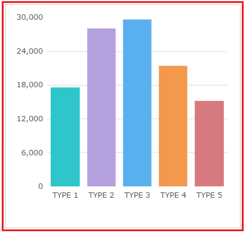
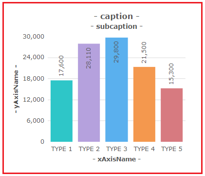

FusionChart의 속성을 스크립트로 적용하는 예제입니다. 이 예제는 FusionChart의 함수 'setChartAttribute'를 사용하는 기본 구문을 안내하고자 작성되어 있습니다. 주로 사용되는 영역별(툴팁, 트랜드라인 등) 속성 적용 방법은 별도의 예제로 제공됩니다.
FusionChart 가이드 : https://www.fusioncharts.com/dev/fusioncharts
FusionChart의 차트별 속성 : https://www.fusioncharts.com/dev/chart-attributes/
속성을 변경하고 브라우저에 그리기(적용하기)
버튼을 클릭하고 차트를 확인합니다.
STEP 1. 초기 상태를 확인합니다.
'Column2D' 유형의 FusionChart가 구성되어 있습니다.
그림 1.브라우저(Chrome) 실행 예시

STEP 2. 차트의 속성을 변경하고 브라우저에 적용합니다.
버튼 차트 속성 변경하고 브라우저에 그리기를 클릭합니다.STEP 3. 실행된 결과를 확인합니다.
다음과 같이 6가지의 차트 속성이 변경됩니다.
차트의 테두리의 선 제거
상단의 캡션과 보조 캡션 표시
우측에 Y축 레이블이 표시
하단에 X축 레이블이 표시
중앙 데이터 막대에 값이 표시
그림 2.브라우저(Chrome) 실행 예시

FusionChart의 함수 'setChartAttribute'와 'draw'를 이용하여 스크립트를 작성합니다. 함수 'setChartAttribute'는 차트의 속성을 변경하는 기능을 제공하며 함수 'draw'는 브라우저에 차트를 그리는 기능을 제공합니다. 세부 지정은 아래의 스크립트 예시에 작성되어 있습니다.
함수 'draw'를 호출해야 변경 사항이 브라우저에 반영됩니다.
스크립트
//예제 파일에서는 스크립트 scwin.btn_exam1_1_onclick에 작성되어 있습니다. let options = {}; options.caption = "- caption -"; // 캡션 표시 options.subCaption = "- subcaption -"; // 보조 캡션 표시 options.xAxisName = "- xAxisName -"; // x축 명칭 표시 options.yAxisName = "- yAxisName -"; // y축 명칭 표시 options.showBorder = 0; // 외각 선 미표시 options.showValues = 1; // data plot에 value를 표시 options.rotateValues = 1; // data plot에 value를 세로로 표시 // Fusionchart 'cht_exam1'의 속성을 설정합니다. cht_exam1.setChartAttribute(options); // Fusionchart 'cht_exam1'를 브라우저에 그립니다. cht_exam1.draw();
FusionChart의 차트별 제공하는 속성은 아래의 링크를 통해 확인할 수 있습니다.
setChartAttribute( options )
draw( )
getChartAttribute( name )
[웹스퀘어5 SP5 개발 가이드] FusionChart
링크 : https://docs1.inswave.com/sp5_user_guide/fd3575622d85d6f9#44b0ca13f66930d7